전자산업기사 (2007-09-02 기출문제)
1과목: 전자회로
1. 다이오드를 사용한 정류회로에서 여러 다이오드를 병렬로 연결하여 사용하는 이유로 가장 타당한 것은?
- 효율을 높일 수 있다.
- 다이오드를 과전압으로부터 보호 할 수 있다.
- 부하 출력의 맥동률을 감소시킬 수 있다.
- 다이오드를 과전류로부터 보호 할 수 있다.
(정답률: 77%)

2. 다음과 같은 단상 전파 정류 회로의 맥동률은 약 얼마인가?
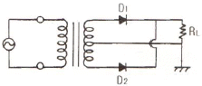
- 1.21
- 1
- 0.52
- 0.48
(정답률: 49%)
3. 그림과 같은 여파기 회로의 주파수 특성은?
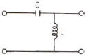
- 고역통과특성
- 저역통과특성
- 대역통과특성
- 대역저지특성
(정답률: 69%)
4. 온도변화에 따른 증폭회로 동작점(Q점)의 변동원인과 가장 거리가 먼 것은?
- β의 온도변화
- ICO의 온도변화
- VBE의 온도변화
- VCE의 온도변화
(정답률: 42%)
5. 이미터플로워 증폭기에 대한 설명으로 적합한 것은?(오류 신고가 접수된 문제입니다. 반드시 정답과 해설을 확인하시기 바랍니다.)
- 전압이득은 1 이상이다.
- 출력 임피던스가 낮다.
- 전력이득은 전류이득과 거의 같다.
- Buffer로 많이 사용된다.
(정답률: 40%)
6. 트랜지스터의 α 차단 주파수는 100[MHz], α=0.98 이다. 이 때 이미터 접지형의 β 차단 주파수는?
- 2[MHz]
- 20[MHz]
- 98[MHz]
- 100[MHz]
(정답률: 59%)
7. 전압이득이 40[dB]인 증폭기가 5%의 왜율을 갖고 있을 때 왜율을 0.5%로 하기 위한 방법으로 가장 적합한 것은?
- 전압증폭율을 15% 높인다.
- 중폭도를 10[dB] 낮게 한다.
- 20[dB]의 부궤환을 걸어준다.
- 전압증폭율을 5% 줄인다.
(정답률: 37%)
8. 부궤환 증폭기에서 궤환이 없는 경우의 전압이득이 1000, 입력 측에 궤환되는 출력 전압의 비율이 0.01 일 때, 이 증폭기의 이득은 약 몇 [dB] 인가?
- 10
- 20
- 30
- 40
(정답률: 32%)
9. 부궤환 증폭기의 특징이 아닌 것은?
- 이득의 증가
- 잡음의 감소
- 주파수 특성 개선
- 비직선 일그러짐의 감소
(정답률: 59%)
10. 직류 증폭기에서 주로 트랜지스터 특성 온도 변화의 영향으로 인하여 출력이 변동되는 현상은?
- 발진
- 초퍼
- 증폭
- 드리프트
(정답률: 79%)
11. 그림의 연산증폭기에서 Vi-Vo의 관계 특성으로 가장 적합한 것은?
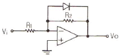
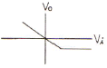
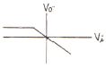
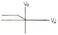
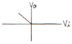
(정답률: 62%)
12. 다음 그림은 반전연산증폭회로이다. V1 = 3[V], V2 = 4[V]일 때, V0는 몇 [V]인가?
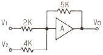
- -12.5
- -13.75
- -14.2
- -15.25
(정답률: 71%)
13. 다음 반전연산증폭기를 이용한 가산기 회로의 입력과 출력관계로 가장 적합한 것은?
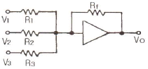
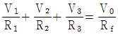
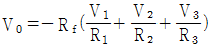
- V0 = V1 + V2 + V3
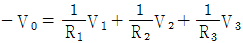
(정답률: 75%)
14. 그림과 같은 발진회로에 관한 설명 중 옳은 것은?
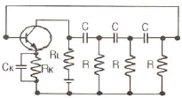
- C와 R을 사용하여 부궤환으로 발진시킨 것이다.
- 다이나트론에 의한 부성저항과 C로 발전시킨 것이다.
- 발진을 계속하기 위해서는 증폭도가 29 이상이 되어야 한다.
- 컬렉터의 LC 동조회로를 C 및 R로 베이스에 결합한 것이다.
(정답률: 60%)
15. RC 결합 증폭회로에서 증폭 대역폭을 2배로 하려면 증폭 이득을 약 몇 [dB] 감소시켜야 하는가?
- 2
- 4
- 6
- 12
(정답률: 63%)
16. B급 푸시-풀(Push-Pull) 증폭기에 사용되는 두 개의 트랜지스터는?
- 두 개의 npn 트랜지스터
- 두 개의 pnp 트랜지스터
- 한 개의 npn 트랜지스터와 한 개의 pnp 트랜지스터
- 한 개의 npn 트랜지스터와 한 개의 n채널 MOSFET
(정답률: 73%)
17. 그림과 같은 리미터 회로의 출력 파형은? (단, 다이오드의 전압 강하는 0.7V 이다.)
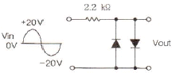
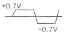
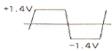
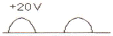
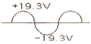
(정답률: 62%)
18. 이상적인 연산 증폭기(OP-Amp)의 특징이 아닌 것은?
- 출력 임피던스가 무한대
- 입력 임피던스가 무한대
- 전압 이득이 무한대
- 대역폭이 무한대
(정답률: 70%)
19. 슬루율(slew rate)의 단위는?
- [V/μs]
- [μs/V]
- [μs/A]
- [A/μs]
(정답률: 81%)
20. 진폭 변조(AM) 방식에서 변조를 80%로 하면 피변조파의 전력은 반송파 전력의 몇 배가 되는가?
- 1.22
- 1.32
- 1.8
- 2.16
(정답률: 66%)
2과목: 전기자기학 및 회로이론
21. ε1＞ε2의 유전체 경계면에 전계가 수직으로 입사할 때, 경계면에 작용하는 힘과 방향에 대한 설명으로 옳은 것은?
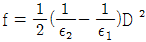
의 힘이 ε1에서 ε2로 작용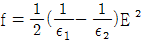
의 힘이 ε2에서 ε1로 작용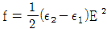
의 힘이 ε1에서 ε2로 작용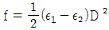
의 힘이 ε2에서 ε1로 작용
(정답률: 38%)
22. 비투자율 800, 원형 단면적 10cm2, 평균자로 길이 30cm인 환상철심에 600회의 권선을 감은 무단솔레노이드가 있다. 이것에 1A의 전류를 흘릴 때, 코일 내부의 자속은 몇 [Wb]인가?
- 32π×10-5
- 64π×10-5
- 96π×10-5
- 128π×10-5
(정답률: 30%)
23. 반지름 a[m]인 도체구에 전하 Q[C]을 주었을 때, 구 중심에서 r[m] 떨어진 구 밖(r＞a)의 전속밀도 D[C/m2]는?
- Q/2πεr
- Q/4πr2
- Q/4πεa2
- Q/4πεr2
(정답률: 42%)
24. 무한길이의 직선 도체에 전하가 균일하게 분포되어 있다. 이 직선 도체로부터 l 인 거리에 있는 점의 전계의 세기는?
- l에 비례한다.
- l에 반비례한다.
- l2에 비례한다.
- l2에 반비례한다.
(정답률: 31%)
25. 유전율이 각각 다른 두 종류의 유전체 경계면에 전속이 입사될 때 이 전속은 어떻게 되는가?
- 굴절
- 반사
- 회절
- 직진
(정답률: 81%)
26. 진송 중에서 반지름 a[m]인 무한길이 직선원통에 단위길이당 ρ [C/m]인 전하가 균일하게 분포되어 있을 때, 중심축으로부터 각각 r1, r2 (r2＞r1＞a) 떨어져 있는 점 A, B 사이의 전위차 VAB 는 몇 [V]인가?
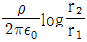
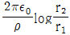
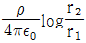
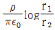
(정답률: 26%)
27. 자속 ø [Wb]가 주파수 f [Hz]로 정현파 모양의 변화를 할 때, 즉 ø = øsin2πft [Wb]일 때, 이 자속과 쇄교하는 권수 N[회]인 코일에 발생하는 기전력 [V]는?
- 2πfNømsin2πft
- -2πfNømsin2πft
- 2πfNømcos2πft
- -2πfNømcos2πft
(정답률: 36%)
28. 2개의 코일을 직렬로 접속할 때, 자속이 서로 같은 방향이 되도록 하면 합성 자기인덕턴스 L+=40mH, 반대방향의 자속이면 L-=20mH이었다. 상호인덕턴스 M은 몇 [mH]인가?
- 2
- 4
- 5
- 10
(정답률: 37%)
29. 자구(magnetic domain)의 크기는?
- 물질의 원자의 질량에 따라 다르다.
- 물질의 상태에 관계없이 같다.
- 물질의 종류에 따라 다르다.
- 물질의 분자의 구성에 관계 없다.
(정답률: 47%)
30. 변위전류란?
- 자석내에 자장이 변화에 생긴 전류
- 도체 중에 전자 이동에서 생긴 전류
- 초전도체 중에 자장을 방해하는 전류
- 유전체 중에 전속밀도의 시간 변화에 생긴 전류
(정답률: 71%)
31. 그림과 같은 톱니파의 실효값은?
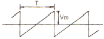
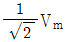
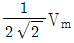
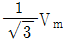
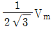
(정답률: 67%)
32. sinwt의 라플라스 변환은?
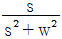
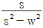
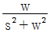
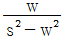
(정답률: 71%)
33. R-L 직렬 회로에서 직류전압 E[V]를 회로 양단에 인가 후, 스위치 S를 닫아 L/R[s] 후의 전류값[A]은?
- E/R
- 0.368E/R
- 0.5E/R
- 0.632E/R
(정답률: 62%)
34. R-L-C 직렬공전회로에 대한 설명 중 옳은 것은? (단, 인가전압 V(실효치)는 일정)
- 어드미턴스의 특성과 전류 특성은 같다.
- R의 값이 클수록 공진 특성의 전류는 증가한다.
- 공진점에서의 어드미턴스 Y는 1/2R로 최대가 된다.
- w에 대한 Y의 궤적은 반원이다.
(정답률: 53%)
35. 그림과 같은 회로에서 공진 시의 어드미턴스는? (단, w2L2 ≫ R2 이다.)
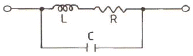
- CR/L
- L/CR
- R/CL
- LR/C
(정답률: 22%)
36. 4단자 회로망에서 출력 단자를 단락할 때, 역방향 전류 이득을 나타내는 파라미터는?
- A
- B
- C
- D
(정답률: 70%)
37. 감쇄정수[neper]를 데시벨로 표시하면 약 몇 [dB]인가?
- 1
- 3.303
- 5.818
- 8.686
(정답률: 65%)
38. 다음 중 옴(ohm)의 법칙에서 전압은?
- 전류에 비례한다.
- 전류에 반비례한다.
- 전류와 관계없다.
- 전류의 제곱에 비례한다.
(정답률: 72%)
39.
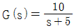
에서 주파수 전달 함수의 위상각 θ 는 몇 상한에 위치하는가?- 1상한
- 2상한
- 3상한
- 4상한
(정답률: 77%)
40. R-L 직렬 회로에서 V = 1∠45° [V], I = 1∠0° [A]일 때, L은 몇 [H]인가? (단, w는 각 주파수이다.)
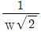
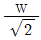
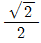
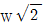
(정답률: 29%)
3과목: 전자계산기일반
41. 다음 ( ) 안에 알맞은 것은?
- RETURN
- CLEAR
- JUMP
- READY
(정답률: 58%)
42. Address line이 16개인 CPU의 직접액세스가 가능한 메모리 공간은 몇 KByte 인가?
- 16
- 32
- 48
- 64
(정답률: 63%)
43. 그림과 같은 256×8 RAM 칩의 주소를 A0 ~ A7 로 지정하고 RAM1을 AS로, RAM2를 A9로 CS에 연결하여 칩선택 신호로 사용할 때 AS = 1 이면 RAM1 칩이 선택되고, 주소 범위는 100(16) ~ 1FF(16) 가 된다. A9 = 1이면 RAM2 칩이 선택되도록 할 때 RAM2 에 할당되는 주소범위는?
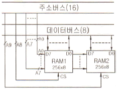
- 100(16) ~1FF(16)
- 200(16) ~2FF(16)
- 300(16) ~3FF(16)
- 400(16) ~4FF(16)
(정답률: 41%)
44. ALU의 입력과 출력 자료의 임시 기억을 목적으로 하며, CPU 내에 연산용 레지스터가 한 개 뿐일 때를 무엇이라고 하는가?
- 인덱스 레지스터
- 어드레스 레지스터
- 어큐뮬레이터
- 명령 레지스터
(정답률: 57%)
45. 명령어 구성요소를 설명한 것 중 가장 옳은 것은?
- OP 코드부만으로 되어 있다.
- 주소부(Operand)만으로 되어 있다.
- OP코드부와 주소부(Operand)로 되어 있다.
- OP코드부 및 주소부(Operand)와는 무관하다.
(정답률: 75%)
46. 마이크로컴퓨터에서 지워지면 안 되는 시스템 프로그램을 기억시키는 소자는?
- RAM
- ROM
- CD-ROM
- Disc
(정답률: 60%)
47. 특정의 비트 또는 문자를 삭제하기 위해 가장 필요한 연산은?
- AND
- OR
- MOVE
- Complement
(정답률: 83%)
48. DATA 처리 명령이 아닌 것은?
- 산술연산 명령
- 논리연산 및 비트처리 명령
- 시프트 명령
- 레지스터 명령
(정답률: 47%)
49. 메모리로부터 데이터를 가져오는 용어 중 옳지 않은 것은?
- LOAD
- READ
- WRITE
- FETCH
(정답률: 63%)
50. 다음의 연산에서 비수치적 연산이 아닌 것은?
- 고정소수점 연산
- MOVE
- SHIFT
- ROTATE
(정답률: 65%)
51. 확장된 2진화 10진 코드(EBCDIC)로 나타낼 수 있는 최대 문자수는?
- 64
- 128
- 192
- 256
(정답률: 47%)
52. 다음 C언어의 자료형 중 INTEGER TYPE이 아닌 것은?
- int
- long
- double
- short
(정답률: 71%)
53. 반가산기의 합 또는 반감산기의 차를 얻기 위해 필요한 회로는?
- XOR
- XXOR
- OR
- AND
(정답률: 67%)
54. 병렬 처리의 목적으로 옳은 것은?
- 사용자의 확대
- 기억 용량의 증대
- 처리 속도의 향상
- 저렴한 가격의 시스템
(정답률: 67%)
55. 입ㆍ출력 채널에 관한 설명 중 옳은 것은?
- 셀렉터 채널은 처리속도가 느린 입ㆍ출력 장치에 사용된다.
- 바이트 멀티플렉서 채널은 처리속도가 빠른 입ㆍ출력 장치에 사용된다.
- 블록 멀티플렉서 채널은 바이트 멀티플렉서 채널과 셀렉터 채널을 결합한 형태이다.
- 채널은 입ㆍ출력 장치가 작동 중일 때 중앙처리장치를 쉬게 한다.
(정답률: 71%)
56. 원시 프로그램을 기계어로 번역하는 것을 무엇이라 하는가?
- 연결 프로그램(Linkage program)
- 목적 프로그램(Object program)
- 사용자 프로그램(User program)
- 원시 프로그램(Source program)
(정답률: 69%)
57. 다음의 데이터 중 가장 큰 것은?
- Field
- File
- Record
- Word
(정답률: 76%)
58. 다음 연산 결과로 옳은 것은?(단, 수의 표현은 2's Complement 임)
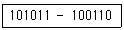
- 000110
- 000101
- 100110
- 100101
(정답률: 60%)
59. 다음 [보기]의 장치를 이용하여 구성되는 것은?
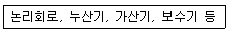
- 입력장치
- 출력장치
- 연산장치
- 제어장치
(정답률: 82%)
60. 시스템에 있어서 데이터의 발생으로부터 처리과정 및 처리된 정보의 배부, 축적하는 전체의 공정을 도식화하여 나타내는 순서도는?
- 프로그램 순서도
- 시스템 순서도
- 상세 순서도
- 개략 순서도
(정답률: 59%)
4과목: 전자계측
61. 계측용 발진기의 필요조건 중 옳지 않은 것은?
- 출력 임피던스가 가능한 클 것
- 출력 파형이 일그러지지 않을 것
- 발진 주파수가 연속 가변 할 수 있을 것
- 출력 전압이 연속 가변이며, 안정되고 직독 할 수 있을 것
(정답률: 42%)
62. VJ계(meter)의 단위는?
- VU
- dB
- V-m
- dBm
(정답률: 59%)
63. 레헤르선 주파수계의 주파수를 구하는 식은? (단, l은 전류계상의 지시가 최대가 되는 인접한 두점간의 거리로서 l = λ/2, λ = 파장, C는 광속이다.)
- f = 2l/C
- f = C/2l
- f = l/C
- f = C/l
(정답률: 60%)
64. 오실로스코프에서 위상차를 측정한 결과 그림과 같은 리서쥬 도형이 나타났다. 다음 관계식 중 옳은 것은?
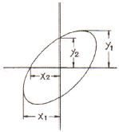
- sin = y1/y2 = x1/x2
- sin = y2/y1 = x2/x1
- sin = y2/y1 = x1/x2
- sin = y1/y2 = x2/x1
(정답률: 63%)
65. 스위프 발진기는 어떤 특성을 측정하기 위하여 사용되는가?
- 전자회로의 전압, 전류 특성을 측정하기 위하여
- 전자회로의 주파수 특성을 측정하기 위하여
- 전자회로의 입력 전압을 측정하기 위하여
- 전자회로의 출력 전압을 측정하기 위하여
(정답률: 70%)
66. 전자기기의 불요 복사 특성을 측정하고자 한다. 필요하지 않은 측정기는?
- 전계 강도계
- 표준 다이폴 안테나
- 시그널 제너레이터
- 스펙트럼 아날라이저
(정답률: 40%)
67. 공진 회로를 갖는 고주파 가변 발진기로서 발진부의 그리드 전류의 변화로 공진 주파수를 측정하는 계기는?
- 계수형 주파수계
- 나비형 주파수계
- 그리드 딥 메터
- 헤테로다인 주파수계
(정답률: 71%)
68. 저주파대의 주파수 부표준기로 사용되며, 발진주파수를 연속 가변할 수 없는 발진기는?
- 비트 주파 발진기
- 음차 발진기
- CR 발진기
- 소인 발진기
(정답률: 45%)
69. 진동편형 주파수계의 특징 중 옳지 않은 것은?
- 지시의 신뢰성이 높다.
- 1000[Hz] 이상에서 사용된다.
- 지시기 단계적이고, 연속성이 없다.
- 구조가 간단하고, 전압에 의한 파형에 영향이 없다.
(정답률: 63%)
70. 오실로스코프를 사용하여 교류 전압 파형을 나타낼 때 교류 파형의 진폭은 어떤 값을 나타내는가?
- 실효치
- 평균치
- 절대치
- 피크치
(정답률: 63%)
71. 참값을 T , 측정값을 M 이라고 할 때, 보정(α)을 나타내는 식은?
- α = M-T
- α = T-M
- α = T-M/M
- α = T-M/T
(정답률: 61%)
72. 싱크로스코프로서 직접 측정할 수 없는 것은?
- 위상
- 전압파형
- 주파수
- 회전수
(정답률: 52%)
73. 그림의 회로에서 a, b 양단의 전압을 측정하니 V 볼트였다. 부하저항 R 값은? (단, E : 전지전압, r : 전지내부저항)
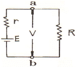
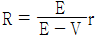
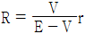
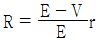
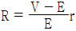
(정답률: 55%)
74. 주파수 계수기(FREQUENCY COUNTER)의 구성 요소 중 표준 수정 발진 회로 다음에 무슨 회로가 첨부되는가?
- 분주회로
- 게이트 제어회로
- 계수회로
- 파형 증폭회로
(정답률: 23%)
75. 물리량(전압, 전류 등)의 크기를 숫자로 바꾸는 장치는?
- A-D 변환기
- DC-AC 변환기
- D-A 변환기
- AC-DC 변환기
(정답률: 66%)
76. 고주파에 의해 발생하는 오차와 관계없는 것은?
- 표피효과
- 접촉저항
- 공진오차
- 파형오차
(정답률: 52%)
77. 다음 중 정현파 파형을 계수에 알맞은 직사각형 파형의 펄스로 바꾸는 역할을 하는 회로는?
- A/D 변환기 회로
- D/A 변환기 회로
- 파형 정형 회로
- 검파 회로
(정답률: 74%)
78. 다음 중 LC 회로의 공진시 공진 주파수는?
(정답률: 73%)
79. 신호대 잡음비(SNR : Signal to Noise Ratio)를 옳게 나타낸 것은?
(정답률: 67%)
80. 다음 중 계수형 주파수계의 설명으로 옳지 않은 것은?
- 온도에 의한 영향이 크다.
- 파형, 전압에 의한 영향이 없다.
- 계수하기 전에 계수부를 0으로 복귀시킨다.
- 측정확도는 표준 주파수에 의해서 결정된다.
(정답률: 32%)